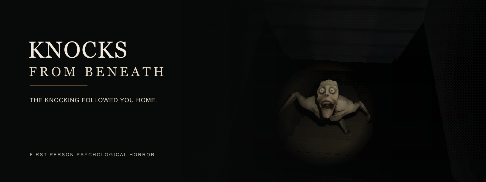
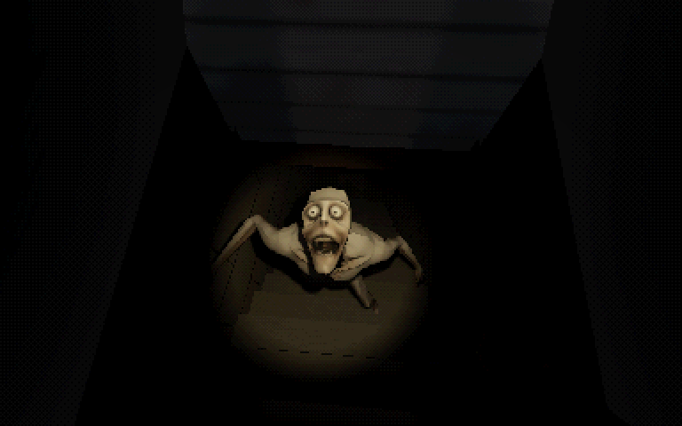
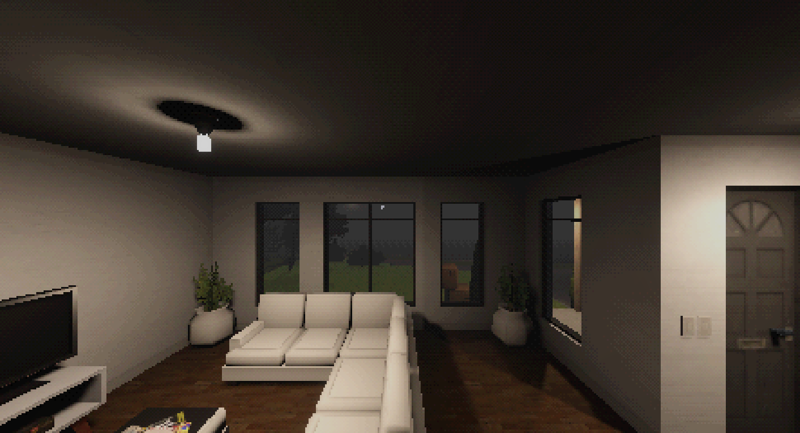
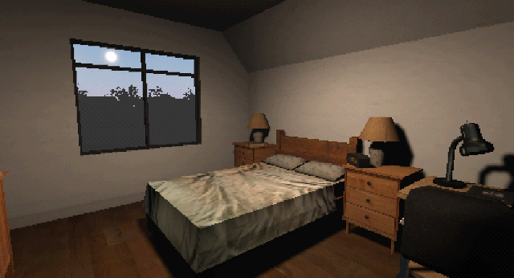
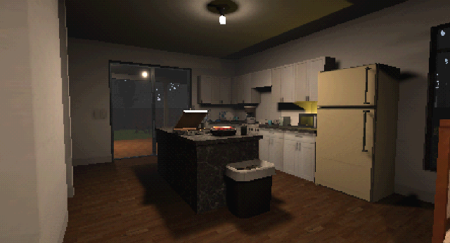

You moved to get away from the knocking. It followed you.
A new house. Boxes to unpack. Dinner to make. For a while, there is enough to do that you can pretend everything is normal.
Then night comes, and you hear it again.
Knocks from Beneath is a first-person horror game about settling into a new home and discovering what is making noise underneath it.
Make yourself at home
Carry boxes, tidy the rooms and prepare dinner. Explore the house through everyday tasks, learning its layout before you have to find your way around at night.
Find the source of the knocking
Follow the sounds through the house. Find your flashlight, search for tools and investigate the locked basement hatch outside.
A familiar house. An unfamiliar sound.
- First-person exploration and hands-on interactions with objects.
- Domestic routines that give way to a night-time horror story.
- Retro, pixelated 3D visuals.
- Decisions that affect how the story ends.
Follow the knocking
The game is in development. No public build is available yet.
Add Knocks from Beneath to your itch.io collection and follow the creator for development updates and news about the public release.
Inside the house



